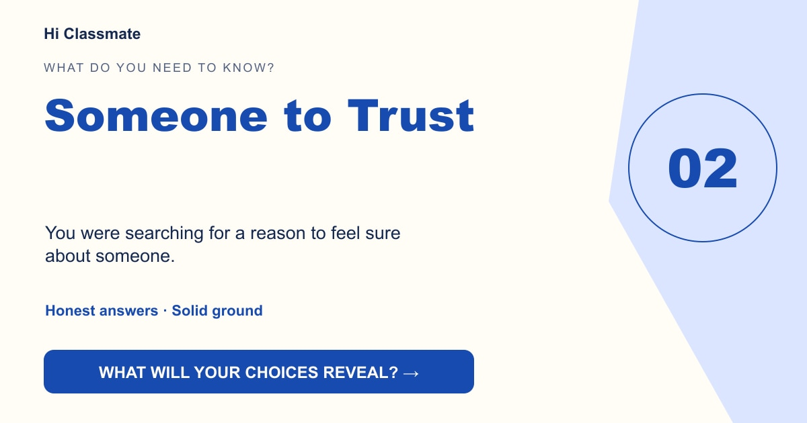

Someone to Trust
You were searching for a reason to feel sure about someone.

Your choices leaned toward hidden conversations and unexplained distance. You may be looking for clarity about who you can rely on, more than the thrill of catching someone out.
Unlock the phone →